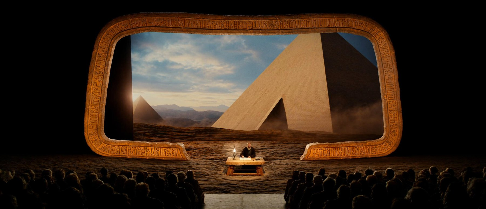
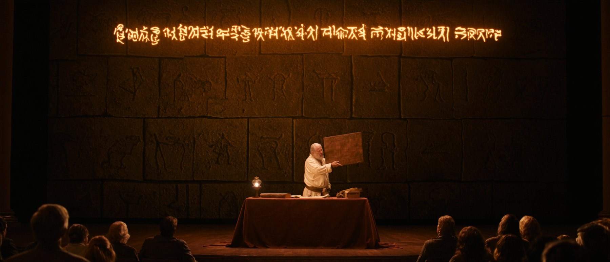

عرضٌ هجين مدته 15 دقيقة يدمج فيلماً سينمائياً بجودة 4K مع أداءٍ مسرحيّ حيّ على خشبة القاعة — الشاشةُ لوحٌ طينيّ عملاق ينطق بالسومرية، والخشبةُ تجيب بالعربية، وممثلون أحياء يحاكَمون أمام قاضٍ يسكن داخل الفيلم.
الجمهور لن يشاهد فيلماً ولن يشاهد مسرحية.
سيجلس داخل جلسة محكمةٍ عمرها ٤٦٠٠ سنة.
«الجلسة الأولى» هي الفقرة الرئيسية المقترحة للاحتفالية: تجربة من النوع الذي تقدمه كبريات فرق العروض العالمية — فيلمٌ سينمائي يعيش داخل شاشةٍ مؤطَّرة كلوحٍ طينيّ عملاق، وممثلون أحياء على الخشبة وبين الجمهور، يتبادلان القصة ذهاباً وإياباً عبر حدود الشاشة: الماضي يتكلم السومرية من داخل اللوح، والحاضر يجيبه بالعربية على الخشبة.
وفي قلب العرض لحظةٌ لا يملكها أي شكل فني آخر: محاكمة عابرة للشاشة — تاجران متخاصمان يقتحمان القاعة من بين الجمهور، ويقف المُحكَّم السومري داخل الفيلم نفسه ليستمع إليهما ويحكم بينهما، بتزامنٍ مضبوط بالتايم-كود بين الأداء الحي والشاشة.
هذا العرض يخص المكوّن السينمائي حصراً: الفيلم الكامل بكل موادّه الشاشية، ومسارات الصوت والتزامن، والإشراف الفني على الدمج في بروفتَين. أما إنتاج المسرحية الحيّة (الممثلون، المخرج المسرحي، الديكور والأزياء، وأنظمة العرض والصوت في القاعة) فيندرج ضمن ميزانية تنظيم الاحتفالية الكاملة.
لأن القصة لا تُروى للجمهور بل تحدث حوله: النزاع يبدأ من بين المقاعد، والحكم ينزل من الشاشة، والبصمة تُنقش أمام العيون، والجلسة تُختم بإضاءة القاعة على الحاضرين أنفسهم. عرضٌ يُروى خبره في بغداد لأسابيع — وسابقة على مستوى المنطقة في الدمج الحي مع سينما الذكاء الاصطناعي.
الراوي الوحيد شخصيةٌ حية محبوبة: «كاتبُ الضبط الأزلي» — كاتب المحكمة الذي يدوّن منذ أربعة آلاف وستمئة سنة، بمكتبه الطينيّ وقنديله في مقدمة الخشبة. هو من يفتتح المحضر ويغلقه، وهو الجسر الإنساني بين اللوح والقاعة — صدىً مباشر لكاتب الضبط في محاكم العراق اليوم. لا تعليق صوتيّ تعليميّ في العرض إطلاقاً؛ كل معلومةٍ تُروى فعلاً ودراماً.
غرزةُ قصبة الكاتب توقظ لوحَ الشاشة العملاق من عتمته — والجلسة تُفتتح بصيغةٍ عراقية.
الشاشة: الأب يعلّم ابنه بالسومرية («يدُك هي الميزان»)؛ الخشبة: الكاتب يدوّن الوصايا بالعربية كأنها تُملى عليه عبر الزمن.
التاجران إينان ولغال يقتحمان القاعة متخاصمَين؛ المُحكَّم يحكم من داخل الفيلم؛ البصمتان تُنقشان في طينٍ حقيقيّ فتظهران فوراً في لوح الشاشة. «هل ترتضيان؟» — «نرتضي ونلتزم».
الشاشة: المعبد والأختام والمحفوظات؛ الخشبة: الكاتب وسلّة الألواح — كل عقدٍ محفوظ، واليمين عند البوابة.
منشدة حية تنشد الرثاء الحقيقي؛ مصابيح الخشبة تنطفئ واحداً واحداً؛ الشاشة تحترق ثم تُظلم لوحاً أسود ميتاً — والكاتب وحده بقنديله.
مسلة حمورابي تنهض من الرماد؛ «باسم الشعب» وانقلاب الترجمة؛ بغداد لوحٌ مضيء؛ والكاتب يستدير للقاعة المضاءة: «رُفعت الجلسة؟ … لا. الجلسةُ مستمرة.»
السيناريو المزدوج الكامل (نص الخشبة + نص الشاشة، فقرةً فقرة، بإشارات التزامن) مرفقٌ في ملف العرض الإبداعي التفصيلي.
شاشة العرض تعمل طوال الدقائق الخمس عشرة تقريباً — أي أن هذا العقد يولّد 12:20 دقيقة من المادة الشاشية بدقة 4K، عبر ثلاثة أنواع مختلفة الهندسة:
مشاهد الفيلم السردية (شوروباك وزيوسودرا، إيكيشنوغال، سقوط أور، حمورابي، محكمة اليوم) — لقطات سينمائية بحوار سومريّ موثق، تُنتج بمنهجية البوابات الثلاث: مسودات ← فحص ← ماستر 4K.
لوحات خلفية طويلة تمدّ ديكور الخشبة إلى داخل الشاشة (سوق أور خلف التاجرين، أروقة المعبد، سماء الرثاء) — تتنفس بحركة خفيفة قابلة للتكرار الحلقي، فيلتحم العالمان بلا خياطة.
المُحكَّم داخل الشاشة يستمع ويتفاعل ويحكم — لقطات مصممة على إيقاع حوار الممثلين الأحياء بالثانية، مع فواصل «انتظارٍ حيّ» تسمح بمرونة الأداء المسرحي، ونقش بصمتَي التاجرَين في اللوح لحظياً.
الفيلم يُسلَّم بنسخة عرضٍ مقسّمة فصولاً على تايم-كود، مع مسارات صوت منفصلة (موسيقى / مؤثرات / حوار شاشة) ونقاط إطلاقٍ مرقّمة لكل إشارة مسرحية، وخريطة إشاراتٍ كاملة لمشغّل العرض وفريق الإضاءة — ويحضر فريقنا بروفتَي دمجٍ كاملتين مع الممثلين في القاعة، الأولى تقنية والثانية جنرال بروفة قبل الحفل بـ48 ساعة.
إنتاج المسرحية الحية: الممثلون والمخرج المسرحي والديكور والأزياء، وأنظمة القاعة (الشاشة/LED، أجهزة العرض، الصوت، الإضاءة) — ضمن ميزانية تنظيم الاحتفالية الكاملة، ويعمل فريقانا تحت رؤية إخراجية واحدة.
ثلاث محطات اعتماد للمجلس (الإطارات والسيناريو ← العرض المبدئي ← النسخة قبل النهائية) وجولتا تعديل مشمولتان — ثم بروفتان في القاعة يلتحم فيهما الفيلم بالممثلين قبل ليلة الحفل.
نسلّم فريقَ المسرحية نصَّ الخشبة وخريطة الإشارات منذ الأسبوع الثاني ليتدرب الممثلون على الإيقاع مبكراً؛ وتُسجَّل قراءاتهم الصوتية لضبط لقطات المحاكمة التفاعلية على أدائهم الفعلي.
| التطوير والسيناريو المزدوج (خشبة + شاشة) والاستشارة الأكاديمية للنصوص السومرية | $2,000 |
| بناء العالم البصري وورقات الشخصيات والإطارات المرجعية المعتمدة | $2,600 |
| التوليد السينمائي 4K — المادة الروائية والبيئات الممتدة ولقطات المحاكمة التفاعلية | $6,000 |
| أجور الفريق — الإخراج وإدارة الإنتاج والإشراف الفني | $2,400 |
| المونتاج والتدريج اللوني والموشن غرافيكس والترجمة (عربي/إنجليزي) | $1,900 |
| الموسيقى التصويرية الأصلية + مؤثرات Foley الحسّية وSFX + مكس 5.1 + مسارات العرض الحي | $2,100 |
| الأداء الصوتي (السومري والعربي) وضبط حوار المُحكَّم على أداء الممثلين | $700 |
| هندسة التزامن (تايم-كود وخريطة الإشارات) وحضور بروفتَي الدمج | $800 |
| ضمان الجودة والنسخ النهائية (نسخة عرضٍ حي + نسخة فيلم مستقلة + DCP) | $500 |
| قيمة العقد الكاملة — شاملة كل ما ورد أعلاه | $19,000 |
إلى جانب نسخة العرض الحي، نسلّم نسخة فيلمٍ مستقلة متكاملة تعمل بلا مسرح — للمنصات الرسمية والوفود والترشح المهرجاني — فيحصل المجلس على تجربةٍ للقاعة وفيلمٍ يعيش بعدها.
لأن العقد يولّد أكثر من ضعف المادة الشاشية (12:20 مقابل 5:30)، ويضيف طبقة الهندسة التفاعلية والتزامن المسرحي — وهي ما يجعل العرض سابقةً على مستوى المنطقة.
لو أُنتجت المادة الشاشية ذاتها (12:20 دقيقة بعالمٍ سومريّ كامل ولقطات تفاعلية مضبوطة) بالتصوير الحقيقي:
| بناء الديكورات (السوق، المعبد، بيت شوروباك، قاعة اليوم) والأزياء والإكسسوارات | $95,000+ |
| طاقم التصوير والمعدات (18–22 يوم تصوير لمادة مضاعفة) | $75,000+ |
| الممثلون والكومبارس (السوق والمعبد والمدينة) | $45,000+ |
| المؤثرات البصرية VFX (سقوط أور، نهوض المسلة، نقش البصمات الحي، بغداد الجوية) | $65,000+ |
| المواقع والتنقلات والتصاريح | $28,000+ |
| المونتاج والصوت والموسيقى ومسارات العرض | $22,000+ |
| التقدير الإجمالي — بزمن إنتاج 7 أشهر أو أكثر | $330,000+ |
مُحكَّم سومري يستمع لممثلَين أحياء ويرد عليهما من داخل الشاشة، وبصمتان تُنقشان في لوحٍ عملاق لحظة بصمهما على الخشبة، وبغداد تتحول لوحاً مسمارياً من السماء — هذه اللقطات لا تُشترى بأي ميزانية تصوير.
أول عرضٍ رسمي في المنطقة يدمج المسرح الحي بسينما الذكاء الاصطناعي بهذا العمق — باسم القضاء العراقي، وعلى أرض القصة الأصلية.

50% — عند توقيع العقد (إطلاق الإنتاج)
25% — عند اعتماد العرض المبدئي (محطة ٢)
25% — بعد الجنرال بروفة والتسليم النهائي
صلاحية هذا العرض: 30 يوماً من تاريخه
نسخة العرض الحي 4K مقسّمة فصولاً بتايم-كود + مسارات صوت منفصلة
نسخة الفيلم المستقلة (قاعة + مهرجان + DCP)
خريطة الإشارات الكاملة ونص الخشبة لفريق المسرح
ترجمات عربية وإنجليزية + المواد الترويجية
حقوق العرض والبث الكاملة للمجلس داخل العراق وخارجه
الموسيقى الأصلية بحقوقها — لا رسوم تراخيص لاحقة
الترشيح المهرجاني لنسخة الفيلم باسم المجلس وبموافقته
جولتا تعديل وبروفتا دمجٍ مشمولتان؛ وما زاد يُتفق عليه كتابةً
كل سطرٍ سومري يُعتمد من مستشار الآشوريات قبل التسجيل؛ الصيغ القضائية وشخصيات العرض تُعتمد من المجلس مسبقاً؛ المعبد يُصوَّر تاريخاً وعمارةً لا طقساً؛ ولا دماء ولا مشاهد عنف — سقوط أور يُروى بانطفاء المصابيح والرماد.
نسلّم الفيلم ومساراته وخريطة إشاراته ونشرف فنياً على الدمج في البروفتين؛ تشغيل أنظمة القاعة ليلة الحفل (شاشة، صوت، إضاءة) بعهدة فريق التنظيم، مع وجود مشرفنا الفني إلى جانب المشغّل طوال العرض.